1ID is a platform to communicate personal identification information(PII) and critical documents between individuals and institutions.
Users get to have their records always online on the blockchain, with full cryptographic control of who gets access. While Institutions can be sure of the source of these records.
Everyone benifits from transparency and lesser paperwork.
Background
Today, to prove your identity or any other position issued by a source institution, to a verifier institution, you have to rely on hard copies of this and other documents and be physically available.
Despite these measures, Institutions are very vulnerable as documents become easier of fake.
Creating Record
Once you login to any Institutional database ( aadhar, electricity board, banking site ) and access the document you want to process, 1ID browser extention will let you encrypt this document on the blockchain, through our samrtcontract.
The user can sign using meta mask, biometrics, etc.
verificaion
When any institution needs to verify documents of the user, he sends them a signed msg, which can be verified against the record on the blockchain.
It's assured that
a. It came through the 1ID smart comtract, hence the information was authenticated at the source
b. There was no tampering as the hash matches
Why Ethereum ?
Many blockchains can provide the functionality 1ID requires, cheaper and more effeciently but we have to balance those concerns with security.
Right now, Ethereum is the only blockchain that's been tried and tested enough, to deploy something this sensitive.
Why trust a third party ?
You wont need to trust us.
In its current form everything except url checking is decentralised. As oracles gain reliability we can become totally trutless.
We want to be provably powerless to interfere. That is our end goal.